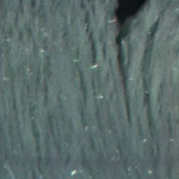
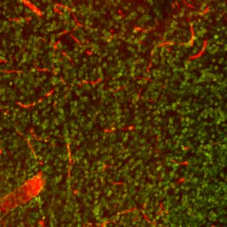
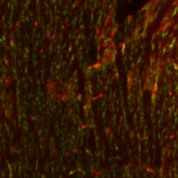
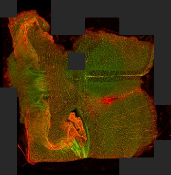
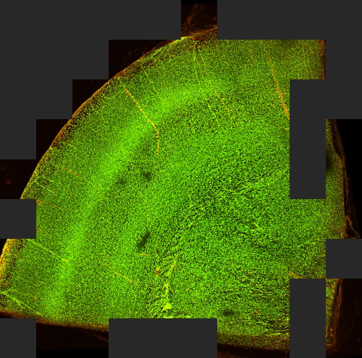
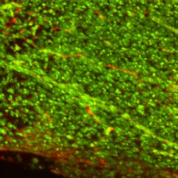
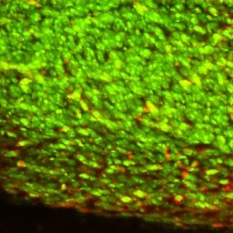

ClariDi: virtual clearing & staining results
Unpublished results, shared for review. Please do not redistribute.
Held-out outputs of the latent Brownian-bridge diffusion models on 753 image tiles from 11 specimens (brain and heart). Every tile was tested exactly once in a spatially blocked 5-fold split, so every output shown here comes from a model that never saw that tile, or the spatial block containing it, during training.
Scope: within-specimen interpolation. Every specimen contributes training tiles to every fold (different regions of the same specimen), so these results measure how well a model fills in held-out regions of specimens it has seen. They do not measure generalization to new specimens.



Tile viewer
One tile at a time: UA, C&SF and every model's VS output side by side, with all five draws per model. Filter by specimen, tissue, scale and fold, and record a verdict per tile.

Whole-sample viewer
All tiles of a specimen stitched back into place: C&SF next to each model's stitched VS, with synchronized pan and zoom.

Spatial splits
For every sample and fold, which tiles are train, val and test in the spatially blocked 5-fold split (v2, with D part 0 fixed).



Slides
The method (as in the manuscript's pipeline figure) and what each model variant changes: stock VQ-GAN, specimen label, A stained references, B unstained context.
All results shown were trained and tested on split v2. Specimen D part 0, whose 5×5 crops straddle its 10×10 grid, is banded tile by tile, and in each fold a validation tile that overlaps a test tile, or a training tile that overlaps a test or validation tile, sits out that fold (3–9 tiles per fold, all from D part 0). Limitation: a test band touches a training band along one edge (shared tile border, no shared pixels).
Terminology
- UA
- Uncleared autofluorescence: the model input.
- C&SF
- Cleared & stained fluorescence: the reference the output is compared against.
- VS
- Virtually stained output, generated from UA.
Models
| Model | Description | Draws shown |
|---|---|---|
| Vanilla L-BBDM | Latent BBDM with the stock ImageNet VQGAN. | 5 |
| Ours (L-BBDM) | Latent BBDM with the VQGAN fine-tuned on C&SF (stain representation). | 5 |
| + specimen label (oracle) | Ours + a specimen-identity embedding. Oracle ablation: needs the specimen's identity and that the specimen was seen in training. | 5 |
| + A stained refs (extra input) | Ours + pooled latent statistics of stained (C&SF) training tiles from the same specimen (never from the tile's own neighbourhood). Extra-input ablation: needs stained tissue of the same specimen at test time. | 5 |
| + B unstained ctx | Ours + the same, computed from unstained (UA) training tiles of the specimen. | 5 |
Diffusion sampling is stochastic: each draw is an independent sample (seeds 1234–1238) for the same input. All five draws are included for every model.
Quantitative results (all five draws)
Predefined aggregate, fixed before looking at the numbers. Every tile is a held-out prediction, and every one of the 5 draws per tile is scored against C&SF at 256×256 px (no best-of-n, no example selection). For each draw: mean over the tiles of each specimen, then the unweighted mean over the 11 specimens. Each cell is the mean ± SD across the 5 draws. The SD reflects sampling variability only, not variability across training runs. Metrics are context; the visual comparison is the main evidence. |Δ green share| = |G/(R+G) of VS − G/(R+G) of C&SF|, per tile.
All 753 tiles, 11 specimens
| method | LPIPS ↓ | PSNR ↑ | SSIM ↑ | |Δ green share| ↓ |
|---|---|---|---|---|
| Vanilla L-BBDM | 0.521 ± 0.004 | 18.45 ± 0.18 | 0.431 ± 0.007 | 0.123 ± 0.013 |
| Ours (L-BBDM) | 0.501 ± 0.002 | 18.29 ± 0.09 | 0.481 ± 0.002 | 0.110 ± 0.006 |
| + specimen label (oracle) | 0.454 ± 0.002 | 19.44 ± 0.11 | 0.509 ± 0.003 | 0.068 ± 0.003 |
| + A stained refs (extra input) | 0.457 ± 0.002 | 19.16 ± 0.10 | 0.500 ± 0.006 | 0.078 ± 0.003 |
| + B unstained ctx | 0.485 ± 0.002 | 18.73 ± 0.10 | 0.490 ± 0.008 | 0.106 ± 0.004 |
Without D part 0 (732 tiles; sensitivity)
| method | LPIPS ↓ | PSNR ↑ | SSIM ↑ | |Δ green share| ↓ |
|---|---|---|---|---|
| Vanilla L-BBDM | 0.520 ± 0.004 | 18.43 ± 0.18 | 0.431 ± 0.007 | 0.122 ± 0.013 |
| Ours (L-BBDM) | 0.501 ± 0.002 | 18.27 ± 0.08 | 0.481 ± 0.002 | 0.109 ± 0.006 |
| + specimen label (oracle) | 0.454 ± 0.002 | 19.41 ± 0.11 | 0.509 ± 0.003 | 0.068 ± 0.003 |
| + A stained refs (extra input) | 0.456 ± 0.002 | 19.14 ± 0.11 | 0.501 ± 0.006 | 0.078 ± 0.003 |
| + B unstained ctx | 0.485 ± 0.002 | 18.70 ± 0.11 | 0.490 ± 0.008 | 0.107 ± 0.004 |
Tile-micro mean, brain, heart and per-specimen LPIPS
All 753 tiles, tile-micro mean (every tile weighted equally)
| method | LPIPS ↓ | PSNR ↑ | SSIM ↑ | |Δ green share| ↓ |
|---|---|---|---|---|
| Vanilla L-BBDM | 0.523 ± 0.004 | 18.39 ± 0.17 | 0.429 ± 0.007 | 0.122 ± 0.012 |
| Ours (L-BBDM) | 0.502 ± 0.002 | 18.24 ± 0.08 | 0.479 ± 0.002 | 0.109 ± 0.006 |
| + specimen label (oracle) | 0.458 ± 0.003 | 19.28 ± 0.12 | 0.506 ± 0.003 | 0.070 ± 0.003 |
| + A stained refs (extra input) | 0.460 ± 0.002 | 19.05 ± 0.11 | 0.498 ± 0.006 | 0.079 ± 0.003 |
| + B unstained ctx | 0.489 ± 0.001 | 18.59 ± 0.10 | 0.489 ± 0.007 | 0.107 ± 0.004 |
Brain (6 specimens)
| method | LPIPS ↓ | PSNR ↑ | SSIM ↑ | |Δ green share| ↓ |
|---|---|---|---|---|
| Vanilla L-BBDM | 0.516 ± 0.006 | 18.66 ± 0.17 | 0.439 ± 0.006 | 0.135 ± 0.012 |
| Ours (L-BBDM) | 0.496 ± 0.005 | 18.64 ± 0.10 | 0.498 ± 0.002 | 0.121 ± 0.008 |
| + specimen label (oracle) | 0.449 ± 0.004 | 19.70 ± 0.12 | 0.519 ± 0.003 | 0.076 ± 0.005 |
| + A stained refs (extra input) | 0.448 ± 0.002 | 19.38 ± 0.12 | 0.513 ± 0.007 | 0.088 ± 0.003 |
| + B unstained ctx | 0.487 ± 0.002 | 18.85 ± 0.11 | 0.502 ± 0.008 | 0.121 ± 0.006 |
Heart (5 specimens)
| method | LPIPS ↓ | PSNR ↑ | SSIM ↑ | |Δ green share| ↓ |
|---|---|---|---|---|
| Vanilla L-BBDM | 0.526 ± 0.003 | 18.20 ± 0.19 | 0.423 ± 0.009 | 0.109 ± 0.014 |
| Ours (L-BBDM) | 0.506 ± 0.003 | 17.87 ± 0.08 | 0.459 ± 0.002 | 0.096 ± 0.006 |
| + specimen label (oracle) | 0.460 ± 0.003 | 19.14 ± 0.11 | 0.497 ± 0.003 | 0.059 ± 0.002 |
| + A stained refs (extra input) | 0.469 ± 0.002 | 18.90 ± 0.08 | 0.485 ± 0.006 | 0.067 ± 0.004 |
| + B unstained ctx | 0.483 ± 0.003 | 18.58 ± 0.10 | 0.476 ± 0.008 | 0.089 ± 0.003 |
Per specimen, LPIPS (tile mean; mean ± SD across draws)
| specimen | n | Vanilla L-BBDM | Ours (L-BBDM) | + specimen label (oracle) | + A stained refs (extra input) | + B unstained ctx |
|---|---|---|---|---|---|---|
| A | 79 | 0.570 ± 0.029 | 0.538 ± 0.020 | 0.396 ± 0.009 | 0.400 ± 0.007 | 0.505 ± 0.006 |
| B | 55 | 0.575 ± 0.011 | 0.534 ± 0.009 | 0.455 ± 0.003 | 0.471 ± 0.006 | 0.480 ± 0.005 |
| C | 53 | 0.521 ± 0.004 | 0.472 ± 0.004 | 0.459 ± 0.003 | 0.465 ± 0.003 | 0.486 ± 0.004 |
| D | 50 | 0.481 ± 0.005 | 0.484 ± 0.005 | 0.434 ± 0.003 | 0.446 ± 0.003 | 0.461 ± 0.004 |
| E | 64 | 0.564 ± 0.016 | 0.557 ± 0.015 | 0.479 ± 0.005 | 0.475 ± 0.005 | 0.518 ± 0.005 |
| F | 50 | 0.521 ± 0.005 | 0.501 ± 0.002 | 0.458 ± 0.003 | 0.466 ± 0.004 | 0.481 ± 0.005 |
| G | 96 | 0.551 ± 0.004 | 0.500 ± 0.004 | 0.514 ± 0.006 | 0.495 ± 0.003 | 0.518 ± 0.001 |
| H | 126 | 0.525 ± 0.005 | 0.513 ± 0.003 | 0.493 ± 0.003 | 0.496 ± 0.003 | 0.513 ± 0.001 |
| I | 68 | 0.405 ± 0.007 | 0.384 ± 0.004 | 0.374 ± 0.003 | 0.374 ± 0.004 | 0.405 ± 0.006 |
| J | 59 | 0.505 ± 0.009 | 0.499 ± 0.010 | 0.473 ± 0.004 | 0.484 ± 0.005 | 0.484 ± 0.005 |
| K | 53 | 0.510 ± 0.016 | 0.524 ± 0.010 | 0.457 ± 0.005 | 0.462 ± 0.004 | 0.484 ± 0.005 |
Data
| Tissue | Specimens |
|---|---|
| Brain | A, D, E, G, H, I |
| Heart | B, C, F, J, K |
Tiles come from two overlapping crop grids per specimen (5×5 and 10×10 crops of the same field; one 5×5 crop covers the area of 2×2 10×10 crops), all resized to 256×256 px. Tiles marked masked contain a masked-out region.